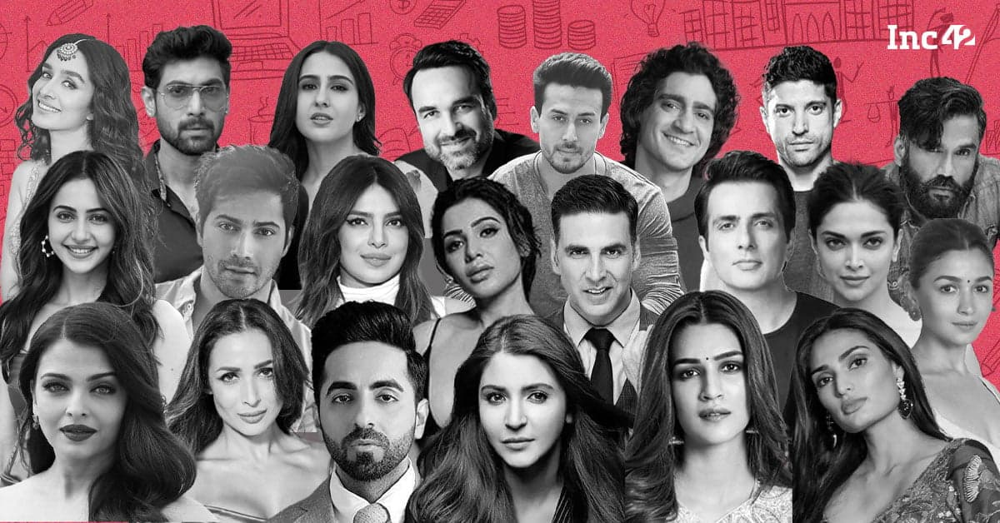
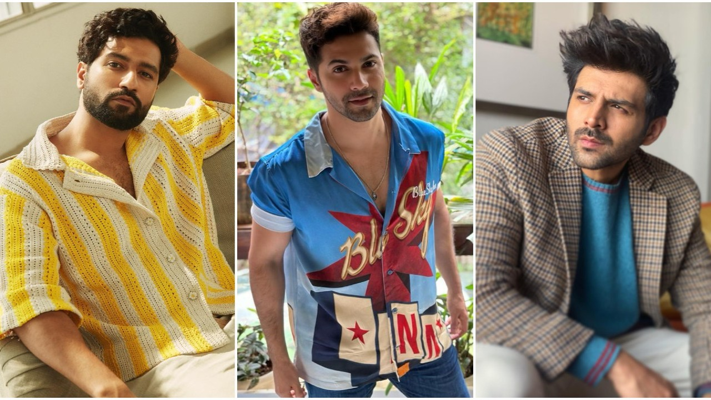

Types of Coffee Drinks
coffee We offer
Arabica. Arabica is the most popular type of coffee, hands down. ...
Robusta. While Arabica is the most popular, Robusta is a cheaper and stronger type of coffee bean. ...
Black. ...
Latte. ...
Cappuccino. ...
Americano. ...
Espresso. ...
Doppio.
Black coffee
- Ristretto.
- Espresso.
- Lungo.
- Café Americano.
- Long Black.
Latte
- Pecan Crunch Oatmilk Latte.
- Pumpkin Spice Latte.
- Oleato™ Caffé Latte with Oatmilk.
- Caffè Latte.
- Cinnamon Dolce Latte.
- Starbucks® Blonde Vanilla Latte.
Arabica
- Typica.
- Bourbon.
- Caturra.
- Catimor.
- Villabos.
CONTACT US
We are open every day. Thank you for your continued support!
Monday - Friday, 7:00am - 2:00am Saturday & Sunday, 7:30am - 2:00pm
Please feel free to order online or come in to the shop to order!
+91 9554 9999 37/ 38 / 39
info@localcafe.in
We are open every day. Thank you for your continued support!
Monday - Friday, 7:00am - 2:00am Saturday & Sunday, 7:30am - 2:00pm
Please feel free to order online or come in to the shop to order!
+91 9554 9999 37/ 38 / 39
info@localcafe.in
LIKE US ON FACEBOOK